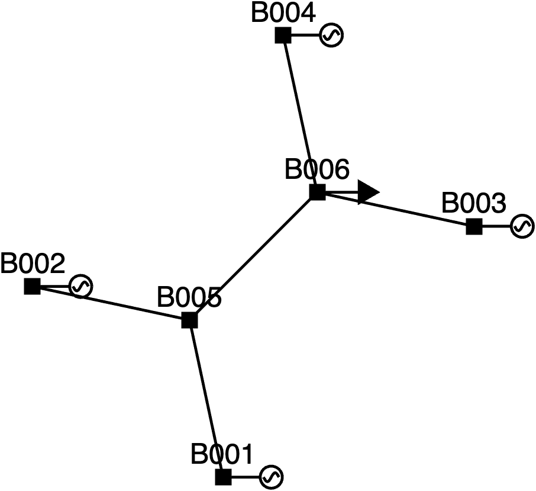
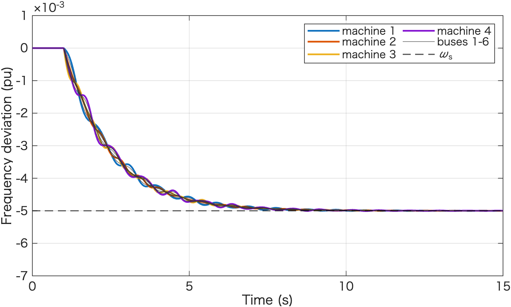
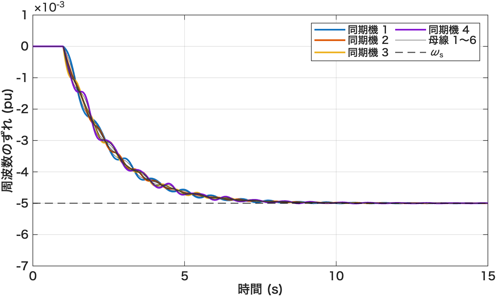
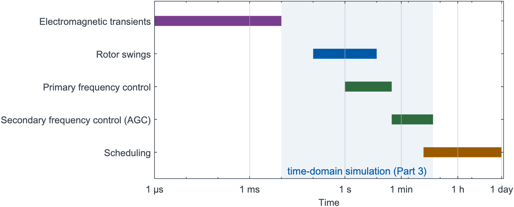
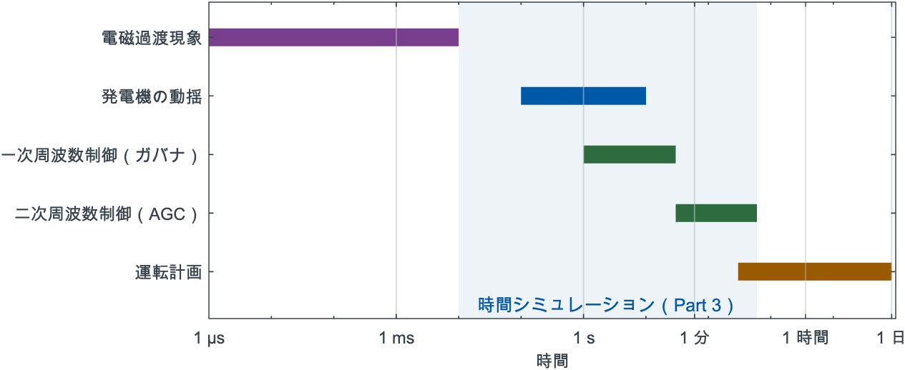
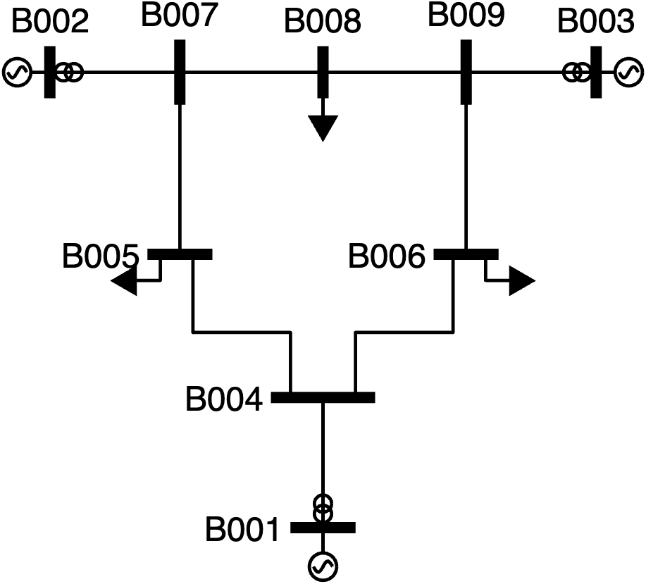
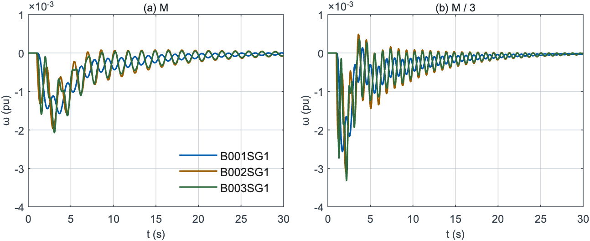

What this Part coversこの Part の内容
- How electricity travels from power plants to homes and factories.電気が発電所から家庭や工場まで、どのように届くか。
- Why supply and demand must match at every moment, and what the frequency and the voltage tell us.需要と供給を常に一致させる必要がある理由と、周波数と電圧が表すもの。
- How generators, each with its own swing equation, synchronize to one frequency, and which value that frequency takes.それぞれ自分の動揺方程式に従う発電機が、どのように 1 つの周波数に同期し、その周波数がどの値になるか。
- Which phenomena happen in a power system, and on which time scales.電力系統で起きる現象と、その時間の長さ。
- Which analysis answers which question, and which Part covers it.どの解析がどの問いに答えるか、それをどの Part で扱うか。
- What changes when more renewable energy is connected.再生可能エネルギーが増えると何が変わるか。
From power plants to consumers発電所から需要家まで
A power system is the whole set of equipment that generates electricity and delivers it to consumers. It has four stages: generation in power plants, transmission over long distances at high voltage, distribution in towns at lower voltage, and demand, the homes, offices and factories that use the electricity.
電力系統は、電気をつくって需要家に届けるための設備全体です。発電所で電気をつくる発電、高い電圧で遠くまで運ぶ送電、町の中で低い電圧にして配る配電、そして電気を使う家庭・事務所・工場などの需要の 4 つの段階からなります。
Power is sent at high voltage because, for the same power, a higher voltage needs a smaller current, and the losses in the wires grow with the square of the current. Transformers in substations raise the voltage after the generators and lower it step by step towards the consumers.
高い電圧で送るのは、同じ電力なら電圧が高いほど電流が小さくて済み、電線で失われる電力（損失）が電流の 2 乗に比例して増えるからです。発電機の後で変電所の変圧器が電圧を上げ、需要家に近づくにつれて段階的に下げていきます。
The lines do not form a single chain: many power plants and substations are connected in a mesh, so that power can take another route when one line is out. Electricity is alternating current; in Japan the frequency is 50 Hz in the east and 60 Hz in the west. In analysis, this mesh is drawn as buses (connection points) joined by branches (lines and transformers), with generators and loads attached to the buses. Part 1 builds such a model.
送電線は一本の鎖ではありません。多くの発電所と変電所が網の目のようにつながっていて、どこかの送電線が使えなくなっても別の経路で電力が流れます。電気は交流で、日本の周波数は東日本で 50 Hz、西日本で 60 Hz です。解析では、この網の目を母線（接続点）と、それらを結ぶブランチ（送電線や変圧器）で表し、発電機や負荷を母線につなぎます。このモデルの作り方は Part 1 で扱います。
To see such a mesh in GUILDA, load the bundled IEEE 68-bus system and draw its buses and branches:
GUILDA で確かめるときは、同梱の IEEE 68 母線系統を読み込み、母線とブランチを図にします。
net = network.IEEE68bus();
net.plot_diagram();Supply must match demand at every moment需要と供給を常に一致させる
The network itself stores almost no electrical energy. The power that generators produce therefore has to equal the power that consumers use, plus the losses, at every moment. This is called the balance of supply and demand (in Japanese, dōji dōryō, "same amount at the same time").
送電網そのものは、電気エネルギーをほとんど蓄えられません。そのため、発電機がつくる電力は、需要家が使う電力と損失の合計に、いつの瞬間も等しくなければなりません。これを同時同量といいます。
For the first few seconds, a mismatch is covered by the kinetic energy stored in the rotating masses of the synchronous generators and the turbines coupled to them. When demand exceeds supply, the difference is drawn from this energy, the rotors slow down, and the frequency falls. When supply exceeds demand, the rotors speed up and the frequency rises.
需給のずれを最初の数秒間まかなうのは、同期発電機の回転子と、それにつながるタービンに蓄えられた運動エネルギーです。需要が供給より多いと、その差がこの運動エネルギーから取り出されて回転子が減速し、周波数が下がります。供給が需要より多いと回転子が加速し、周波数が上がります。
One swing equation for each generator発電機ごとの動揺方程式
A power system has many synchronous generators, and each has its own rotor. The motion of the rotor of generator () is described by its own swing equation (Part 1):
電力系統には多くの同期発電機があり、それぞれが自分の回転子を持っています。発電機 （）の回転子の動きは、その発電機の動揺方程式（Part 1）で表されます。
- Inertia of generator 発電機 の慣性
- Mechanical input from its turbineタービンからの機械入力
- Electrical output, set by the whole network電気出力。系統全体の状態で決まる
is the rotor angle (rad), measured from a reference that rotates at the rated frequency ; is the speed deviation (pu): the rotor turns at times its rated speed. (s) is the inertia constant and (pu) the damping. The electrical output is the power that generator sends into the network. It follows from the network equations (Part 1) and depends on the rotor angles and internal voltages of all the generators and on the loads. This is how the generators are coupled: the equation of one generator cannot be solved without the others.
は回転子の角度（rad）で、定格周波数 で回る基準から測ります。 は速さのずれ（pu）で、回転子は定格の速さの 倍で回っています。（s）は慣性定数、（pu）は制動の大きさです。電気出力 は、発電機 が送電網に送り出す電力です。これは送電網の方程式（Part 1）から決まり、すべての発電機の回転子の角度と内部電圧、そして負荷によって変わります。発電機どうしは、このように送電網を通して結び付いています。1 台の発電機の式だけを取り出して解くことはできません。
The frequency of each bus, and synchronism母線ごとの周波数と同期
The voltage of bus is a sinusoid close to the rated frequency. With its phase angle , measured from the same reference as the rotor angles, the voltage and its frequency are
母線 の電圧は、定格周波数に近い正弦波です。回転子の角度と同じ基準から測った位相角を とすると、電圧とその周波数 は次のように書けます。
So each bus has its own frequency, the rate of change of its phase angle; it is what a frequency meter at that bus measures. While the generators swing after a disturbance, the bus frequencies differ from one another and from the speeds of the generators.
このように、母線はそれぞれ自分の周波数を持ち、それは位相角の変化の速さで決まります。その母線で周波数計が測るのがこの値です。外乱の後に発電機が揺れている間は、母線の周波数は母線ごとに異なり、発電機の速さとも一致しません。
The network pulls the generators towards a common speed. In normal operation, a generator whose rotor angle runs ahead of the others sends more power into the network, which slows it down, and one that falls behind sends less and speeds up. If the system is stable, the swings die out and the system reaches a synchronized state, in which all the generators turn at the same speed and all the phase angles change at the same rate:
送電網は、発電機を共通の速さに引き寄せるように働きます。通常の運転状態では、回転子の角度がほかより進んだ発電機は送電網へ送り出す電力が増えて減速し、遅れた発電機は送り出す電力が減って加速します。系統が安定であれば揺れは収まり、すべての発電機が同じ速さで回り、すべての位相角が同じ速さで変わる同期した状態になります。
Here is the number of buses. In a synchronized state the frequency is therefore the same at every bus, and this common value is the system frequency. The differences between the phase angles stay constant, so the power on each line is constant as well.
は母線の数です。同期した状態では、どの母線で測っても周波数は同じ値になります。この共通の値 が系統周波数です。位相角の差は一定に保たれるので、各送電線を流れる電力も一定になります。
The common frequency when supply and demand do not balance需給がつり合わないときの共通の周波数
The value of follows from the swing equations. In a synchronized steady state for every generator, and the sum of the swing equations gives
の値は、動揺方程式から決まります。同期した定常状態では、どの発電機でも です。 本の動揺方程式を足し合わせると、次の式が得られます。
The sum of the electrical outputs is the power consumed by the loads plus the losses. If the mechanical input of the generators is smaller than this, : the generators synchronize at a common frequency below the rated value, and the frequency does not return to by itself. Governors increase the mechanical input as the frequency falls; this makes the deviation smaller but leaves part of it. AGC integrates the frequency deviation and changes the inputs until the frequency is back at (Part 8).
電気出力の和は、負荷が消費する電力と損失の和です。発電機の機械入力の和がこれより小さければ となり、発電機は定格より低い共通の周波数で同期します。周波数がひとりでに に戻ることはありません。ガバナは周波数が下がると機械入力を増やすので、ずれは小さくなりますが、一部は残ります。AGC は周波数のずれを積分し、周波数が に戻るまで入力を変えます（Part 8）。
A time-domain simulation in GUILDA shows the same behaviour. The bundled network Tutorial6bus has four machines with the classical model (Part 1), lossless lines and no governors; machines 3 and 4 run as synchronous motors, that is, they take power from the network. A constant-power load is added at bus 6, and from s it draws 0.1 pu:
GUILDA の時間シミュレーションでも、同じことを確かめられます。同梱の系統 Tutorial6bus は、古典モデル（Part 1）の同期機 4 台、損失のない送電線からなり、ガバナはありません。同期機 3 と 4 は同期電動機として運転していて、送電網から電力を受け取ります。この系統の母線 6 に定電力負荷を加え、 秒から 0.1 pu を消費させます。
net = network.Tutorial6bus();
ld = net.a_Bus{6}.add_component("load-power", P=0, Q=0);
net.initialize();
sc = net.add_scenario("step", Time=[0, 15]);
sc.add_input(ld.s_tag, "Pload", -0.1, [1, 15]);
res = net.simulate("step");
res.plot_trajectory(Quantity="omega");
Tutorial6bus with the load added at bus 6, drawn with net.plot_single_line_diagram.Tutorial6bus を、net.plot_single_line_diagram で描きました。

The centre-of-inertia frequency慣性中心の周波数
The sum of the swing equations can also be written with the average of the speeds weighted by the inertia, the speed of the centre of inertia (COI):
動揺方程式の和は、慣性で重み付けした速さの平均、つまり慣性中心（COI）の速さを使っても書けます。
This equation follows exactly from the swing equations, but it is not a model of the whole system. It is one equation for generators; the sum of the electrical outputs depends on all the angles and voltages, through the losses and the voltage-dependent loads; and the damping term equals only when is the same for all the generators or when they are synchronized. It does not describe the swings of the individual generators or the differences between the bus frequencies. What it does show is the effect of the total inertia: when the demand rises suddenly by and the generators take it up at once (exactly so for a constant-power load in a lossless network), the frequency of the centre of inertia starts to fall at the rate . The larger the total inertia , the slower the first fall.
この式は動揺方程式から正確に導けますが、系統全体のモデルではありません。 台の発電機に対して式は 1 本だけです。電気出力の和は、損失や電圧で変わる負荷を通して、すべての角度と電圧に依存します。制動の項が に等しくなるのは、 がすべての発電機で等しいときか、発電機が同期しているときだけです。個々の発電機の揺れや、母線ごとの周波数の違いは、この式からは分かりません。この式から分かるのは、慣性の合計の効果です。需要が急に 増え、それを発電機がすぐに受け持つとき（損失のない送電網と定電力負荷ではちょうどそうなります）、慣性中心の周波数は の速さで下がり始めます。慣性の合計 が大きいほど、最初の低下はゆっくりになります。
In operation, the frequency is kept close to its rated value by adjusting the output of the generators: governors act within seconds, and AGC over tens of seconds to minutes (see the next section and Part 8).
実際の運用では、発電機の出力を調整して周波数を定格値の近くに保ちます。数秒のうちに働くのがガバナ、数十秒から数分かけて働くのが AGC です（次の節と Part 8）。
Voltage電圧
The voltage must also stay within a range. Unlike the frequency of a synchronized system, the voltage magnitude differs from bus to bus. It depends mainly on the balance of reactive power, a part of AC power that does no net work but is needed to keep up the voltage; generators, capacitors and other equipment supply it near where it is needed.
電圧も、決められた範囲に保つ必要があります。同期した系統の周波数と違い、電圧の大きさは母線ごとに異なる値になります。電圧は主に無効電力のつり合いで決まります。無効電力は交流の電力のうち、正味の仕事はしないものの電圧を保つのに必要な成分で、発電機やコンデンサなどの設備が、必要な場所の近くで供給します。
Why keep them within range? Motors, electronics and the generators themselves are designed for the rated frequency and voltage. Large deviations can damage equipment or make protection relays disconnect generators and loads, which can enlarge the disturbance and, in the worst case, lead to a blackout.
なぜ範囲内に保つのでしょうか。モーターや電子機器、発電機そのものが、定格の周波数と電圧で動くように作られているからです。大きくずれると機器が傷んだり、保護装置が発電機や負荷を切り離したりします。それが外乱をさらに大きくし、最悪の場合は大停電につながります。
Phenomena and their time scales系統で起きる現象と時間スケール
Many things happen in a power system at once, but on very different time scales: from surges that last microseconds to plans that cover a whole day. One analysis cannot cover them all, so each analysis looks at one range and treats the faster and slower parts in a simplified way.
電力系統では多くの現象が同時に起きていますが、その時間の長さは大きく異なります。マイクロ秒で終わるサージから、一日全体を見通す計画まであります。一つの解析ですべてを扱うことはできないため、解析ごとに注目する範囲を決め、それより速い現象や遅い現象は簡単化して扱います。


- Electromagnetic transients電磁過渡現象
- Surges from lightning or switching travel along the lines within microseconds to milliseconds. They matter for insulation design.雷や遮断器の開閉で生じるサージが、マイクロ秒からミリ秒のうちに送電線を伝わります。絶縁の設計で重要になります。
- Rotor swings発電機の動揺
- After a fault, the rotors of the generators swing against each other for about 0.1 s to 10 s. Whether they return to step is the question of stability (Parts 3 and 5).事故の後、発電機の回転子どうしが 0.1 秒から 10 秒ほど揺れ合います。元の歩調に戻れるかどうかが安定度の問題です（Part 3 と Part 5）。
- Frequency control周波数制御
- Governors change the output of generators within seconds to stop a frequency change; automatic generation control (AGC) brings the frequency back over tens of seconds to minutes (Part 8).ガバナが数秒のうちに発電機の出力を変えて周波数の変化を止め、自動発電制御（AGC）が数十秒から数分かけて周波数を元に戻します（Part 8）。
- Scheduling運転計画
- Which generators run and how much each produces is planned from minutes to a day ahead, so that the cost is low and the limits are kept (Part 6).どの発電機をどれだけ動かすかを、数分先から一日先まで計画します。費用を抑え、設備の限界を守るためです（Part 6）。
The time-domain simulation of GUILDA represents voltages and currents by the amplitude and phase of the AC waves (phasors). It therefore does not resolve electromagnetic transients, and looks at the rotor swings and the controls that follow them. The power flow, the optimal power flow and the continuation power flow have no time axis at all: they compute the operating state at one moment.
GUILDA の時間シミュレーションは、電圧や電流を交流の振幅と位相（フェーザ）で表します。そのため電磁過渡現象は扱わず、発電機の動揺とそれに続く制御の動きを調べます。潮流計算、最適潮流計算、連続潮流計算には時間の軸がなく、ある瞬間の運転状態を求めます。
Kinds of analysis and the map of the Parts解析の種類と Part のマップ
Every analysis starts from a model of the network (Part 1). The power flow (Part 2) then finds the steady operating state, which is the starting point for the other analyses: some stay at one moment and ask about cost or limits, others follow the swings in time.
どの解析も、系統のモデル（Part 1）から始まります。次に潮流計算（Part 2）で定常的な運転状態を求めます。これがほかの解析の出発点です。その先には、ある瞬間の状態のまま費用や限界を調べる解析と、時間とともに変わる揺れを追う解析があります。
Each analysis answers a different question:
それぞれの解析は、次のような問いに答えます。
- Power flow潮流計算
- For given generation and loads, what are the voltage of each bus and the power on each line?発電と負荷を決めたとき、各母線の電圧と各送電線を流れる電力はどうなるか。
- Time-domain simulation時間シミュレーション
- After a fault or a sudden change, how do the generators swing, and do they come back to a steady state?事故や急な変化の後、発電機はどう揺れ、定常な状態に戻るか。
- Linear analysis線形解析
- Do small swings die out, and how fast? Which generators take part in each swing?小さな揺れは収まるか、どのくらい速く収まるか。どの発電機がどの揺れに関わっているか。
- Optimal power flow最適潮流計算
- Which way of sharing the generation is cheapest while keeping every limit?すべての制約を守りながら、どの発電の分け方がいちばん安いか。
- Continuation power flow連続潮流計算
- How far can the load grow before the voltage can no longer be maintained?負荷をどこまで増やすと、電圧を保てなくなるか。
- Control制御
- How can we measure the system and act on it so that the swings die out quickly?系統をどう測り、どう働きかければ、揺れを早く収められるか。
Part 4 does not add a new analysis. It draws the results of the power flow and the time-domain simulation as masses connected by springs.
Part 4 では新しい解析は加えません。潮流計算と時間シミュレーションの結果を、ばねでつながった質点の図として描きます。
What changes with more renewable energy再生可能エネルギーが増えると何が変わるか
Solar panels and most wind turbines connect to the network through inverters, power electronic converters, instead of a large rotor that turns in step with the grid. When they replace conventional power plants, the system changes in several ways:
太陽光発電や多くの風力発電は、系統と同じ速さで回る大きな回転子ではなく、インバータ（パワーエレクトロニクスの変換器）を通して系統につながります。これらが従来の発電所に置き換わると、系統はいくつかの点で変わります。
- Lower inertia. Fewer heavy rotors means less stored kinetic energy. After a large generator trips, the frequency falls faster and lower before the governors can respond; the initial rate of fall of the centre-of-inertia frequency is inversely proportional to the total inertia, as shown above.慣性が小さくなる。重い回転子が減ると、蓄えられた運動エネルギーも減ります。大きな発電機が脱落したとき、ガバナが働くまでの間に、周波数がより速く、より深く下がります。上で見たとおり、慣性中心の周波数が下がり始める速さは、慣性の合計に反比例します。
- Output that follows the weather. The output changes with sunlight and wind, so the other generators and storage have to adjust more often to keep the balance.出力が天候で変わる。日射や風によって出力が変わるため、需給のつり合いを保つために、ほかの発電機や蓄電池がより頻繁に調整します。
- Behaviour set by control. How an inverter reacts to a disturbance is decided by its control design, not by physics alone, so the dynamics of the whole system depend more on controllers.ふるまいを制御が決める。インバータが外乱にどう応えるかは、物理だけでなく制御の設計で決まります。そのため、系統全体の動きが制御器に左右される度合いが大きくなります。
The figures below compare two cases of the IEEE 9-bus system, whose single-line diagram is shown first.
次の図では、IEEE 9 母線系統で 2 つの場合を比べます。先にその単線結線図を示します。

network.IEEE9bus), drawn with net.plot_single_line_diagram.network.IEEE9bus）を net.plot_single_line_diagram で描いた図です。
To keep such systems stable, inverters that imitate the response of inertia, batteries and new control methods are being studied and introduced. The analyses in this series, especially the time-domain simulation, linearization and controller design, are the tools for checking such ideas.
このような系統を安定に保つために、慣性のようにふるまうインバータの制御や蓄電池、新しい制御方式が研究され、導入されています。「電力系統を理解する」で扱う解析、特に時間シミュレーション、近似線形化、制御器の設計は、こうした考えを確かめるための道具です。
Summaryまとめ
- A power system generates, transmits and distributes electricity to consumers; the network is a mesh of buses and branches.電力系統は、電気をつくり（発電）、運び（送電）、配って（配電）需要家に届けます。送電網は母線とブランチの網の目です。
- Supply and demand must match at every moment. Each generator follows its own swing equation, and each bus has its own frequency.需要と供給は常に一致させる必要があります。発電機はそれぞれ自分の動揺方程式に従い、母線はそれぞれ自分の周波数を持ちます。
- Coupled through the network, the generators synchronize, and the frequency becomes the same at every bus. When the mechanical input is smaller than the demand, this common frequency is below the rated value until governors and AGC change the generation.送電網で結ばれた発電機は同期し、周波数はどの母線でも同じ値になります。機械入力が需要より小さいと、この共通の周波数は定格値より低くなり、ガバナと AGC が発電を変えるまでそのままです。
- The voltage depends on reactive power and differs from bus to bus.電圧は無効電力に左右され、母線ごとに異なります。
- Phenomena range from microseconds to a day. Each analysis looks at one range.現象の時間スケールはマイクロ秒から一日まで広がっていて、解析ごとに注目する範囲が異なります。
- The power flow finds the operating state, which is the starting point of the time-domain simulation, linearization, optimal power flow and continuation power flow.潮流計算で求めた運転状態が、時間シミュレーション、近似線形化、最適潮流計算、連続潮流計算の出発点になります。
- With more inverter-based renewable energy, the inertia falls and controllers matter more.インバータでつながる再生可能エネルギーが増えると、慣性が小さくなり、制御器の役割が大きくなります。
Live Scriptsライブスクリプト
_GUILDAtutorial/Part0_Introduction.mlx(in Japanese). With GUILDA on the path, open it in MATLAB withopen Part0_Introduction.mlx. Running it draws the time-scale figure and the comparison of the inertia on this page._GUILDAtutorial/Part0_Introduction.mlxです。GUILDA をパスに追加した状態で、MATLAB でopen Part0_Introduction.mlxを実行すると開きます。実行すると、このページの時間スケールの図と、慣性を比べた図を描けます。
References参考文献
- T. Ishizaki (ed.), T. Kawaguchi and K. Kawabe,石崎孝幸 編著、川口貴弘・河辺賢一 著、 電力系統のシステム制御工学 – システム数理と MATLAB シミュレーション –, Corona Publishing, 2022 (in Japanese).、コロナ社、2022 年（計測・制御セレクションシリーズ 4）。 The textbook GUILDA is based on; it explains power systems in the language of systems and control.GUILDA の基になった教科書です。電力系統をシステム制御の言葉で説明しています。
- P. Kundur and O. P. Malik, Power System Stability and Control, 2nd ed., McGraw Hill, 2022. A standard reference on power system stability, its phenomena and models.電力系統の安定度と、その現象・モデルについての標準的な参考書です。
- J. Machowski, Z. Lubosny, J. W. Bialek and J. R. Bumby, Power System Dynamics: Stability and Control, 3rd ed., Wiley, 2020. Power system dynamics and control, including the effect of renewable energy on inertia.電力系統の動特性と制御の教科書です。再生可能エネルギーが慣性に与える影響も扱っています。